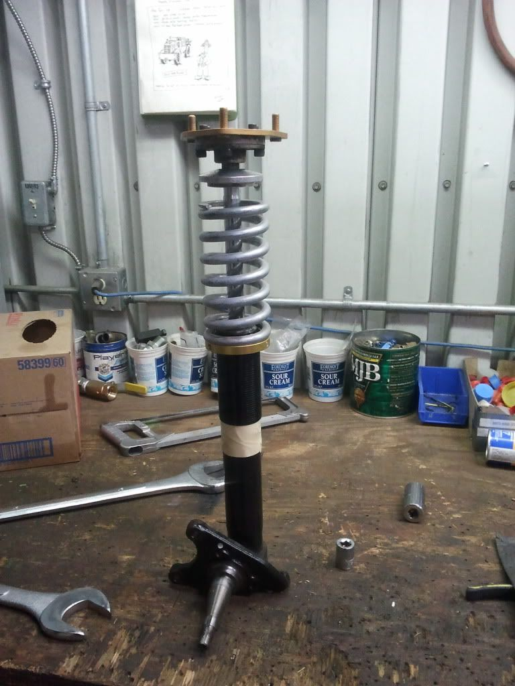
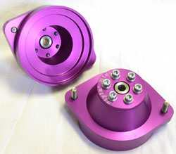
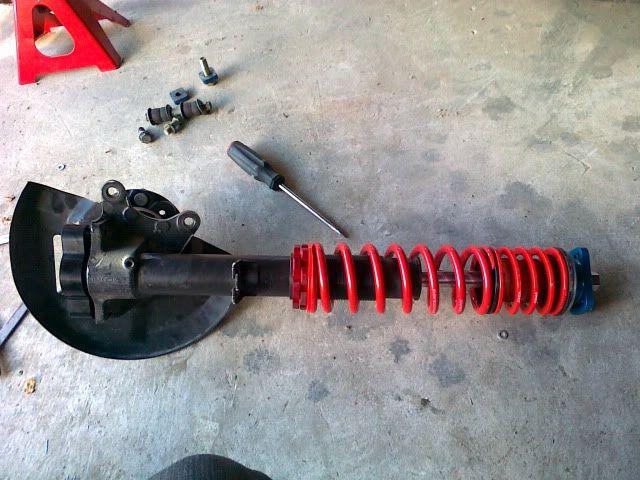
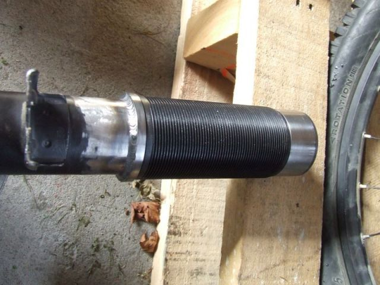
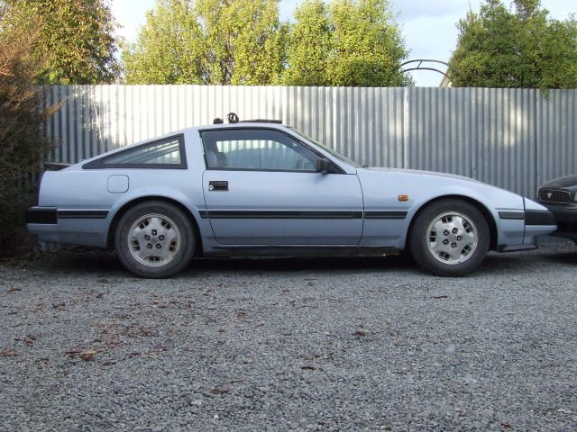

-
Any one have a measurement of the free height of the WHOLE assembly including knuckle?
-
I measured mine approx 20" from kingpin to top hat surface, adding the steering knuckle is maybe +2.5" -
ok cool! thanks man. looks like im right on point for where i want the adjusters to sit! -
I am basing that on threading the coilover into the sleeves to just where the sleeve's threads stop, so moar low can be had -
Whats the purpose? Loaded suspension will vary with spring rates, break in period ect… Put them on your car and adjust accordingly. I set my fronts at the same height when installing only to find the car uneven after installing. Each corner is going to be different. It takes some hours to get everything right, but that is the process.
Get yourself a strap wrench, and tape measure and go at it. Find a nice level even surface and start measuring fender arch to ground. By the 7th time between jacking up, take wheels off, adjusting, putting wheels on, lower, rolling out just to get that 1/4" you will understand.
Other good rule of thumb prior to putting the wheels on, is measure the center of the hub to fender arch, this should get you pretty close.
edit.....
I forget what coilover setup you are going with (which the information in the 1st post would have been more helpful) but there are drastic difference between brands (ie damper free length (valving and rod length), spring length, helpers). Someone can dig up my picture comparing Stance to EMUSA side by sides.86na - BlueZ
Shiro #366 - Kouki Monster
85t - Mr Tickles -
still in the process of building the coilovers. got one mocked up and wanted to check what the height of the "Bolt on/weld" kit (IE: STANCE/POWERTRIX) was

im sitting right about 22" with the shock shaft depressed the 1" that it sits up. -
Ok, I am sure James could help you out with some answers as well as he has a very similar setup that he has evolved over the years.86na - BlueZ
Shiro #366 - Kouki Monster
85t - Mr Tickles -
Should be fine, you have a lot more thread to go… and the shock travel should be ok, if you get close to bottoming out the piston, you can make an extra deep gland nut or carefully measured spacer, to use with a shorter body strut insert
Remember unlike a coilover you're ride height affects your shock travel, keep a stiff enough spring and you can control that, assuming your strut can handle the spring -
I think im going to do the smaller insert and use a spacer. what do you reckon I use for the inserts? mr2?
ill check out james build thread again aswell -
Another miata trick you could use: Raise the point where the top of the strut rod is mounted to keep (more) shock travel. Not sure how much room the hood allows but it has some.
Miata's had two types of OEM mounts, one which was a tad higher which is desired among SCCA folk
or new hats all together

Ill let you figure out an offset hat that will work with camber plate 86na - BlueZ
86na - BlueZ
Shiro #366 - Kouki Monster
85t - Mr Tickles -
To make that work he'd have to cut away some of the hood support -
If you already have Bilsteins or Koni's you could use a keeper spring with a free hight of about 80mm and a compressed height of about 30mmslammedcoupe;339745 wrote: I think im going to do the smaller insert and use a spacer. what do you reckon I use for the inserts? mr2?
ill check out james build thread again aswell

Keeeperr spring is 80mm, main spring is 220mm - this is on a stock insert with ASCO plates

The spacer tube underneath the gland nut is 30mm tall, the black phosphate coil over sleeve is 120mm.
No need to weld the sleeve direct to the coil over, just get steel weld on rings
I allowed to use a longer spring and spacer my sleeve down a bit lower to the brake house mount, this is so that if i decide to section the tubes and use shorter inserts I have room to do so without re welding the rings.

That pic above is the maximum possible LOW on 5kg springs with stock length inserts, Take your Z insert into a parts shop and compare to the MR2 inserts. something around 1" shorter and section the tube 1" would give you a lot of ability to go lower and still have full shock travel.85 Turbo Slick Top
__________________________________________________ _____

Copyright © 2006–. All rights reserved. Privacy Policy